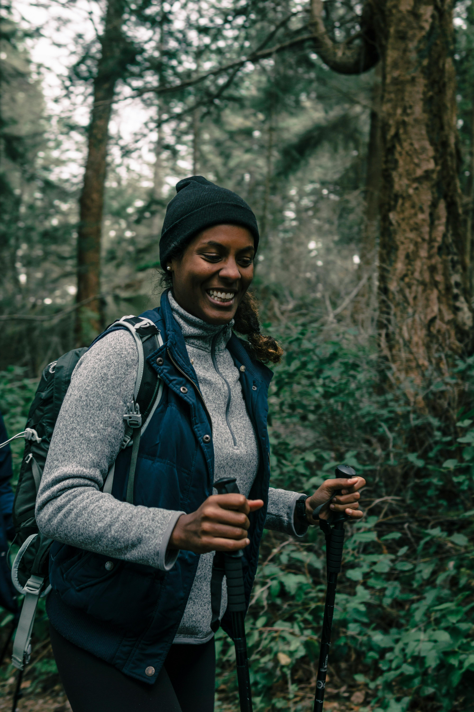
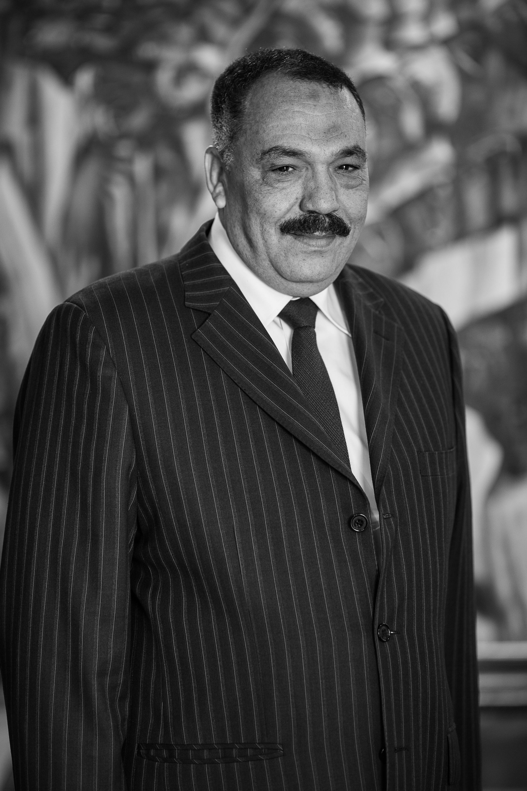
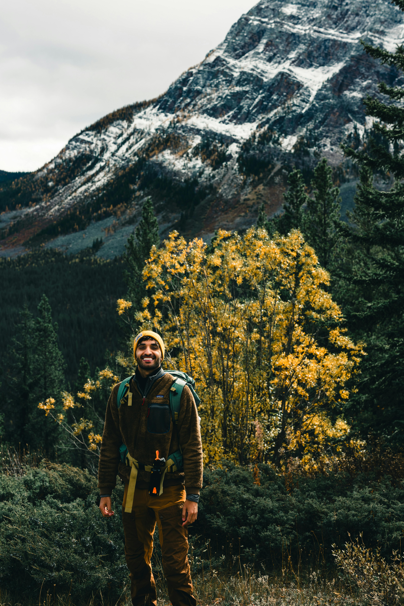

Our Story
The Visionaries Behind the Resort
Pacific Trails Resort was built on a foundation of passion and environmental stewardship. Meet the dedicated leadership team responsible for our success.



Our Mission
At Pacific Trails Resort, our mission is to provide an unparalleled guest experience that harmonizes luxury with the raw beauty of the Pacific Coast. We are dedicated to creating a sanctuary where travelers can escape the noise of modern life and rediscover their connection to nature through sustainable and responsible tourism.
We believe that hospitality goes hand-in-hand with environmental stewardship. Our commitment extends beyond providing comfortable lodging; we strive to preserve the local ecosystem, protect our ancient coastal trails, and support our community. Whether you are hiking through our pristine forests or relaxing in a luxury yurt, our goal is to ensure your stay is restorative for both your spirit and the planet.